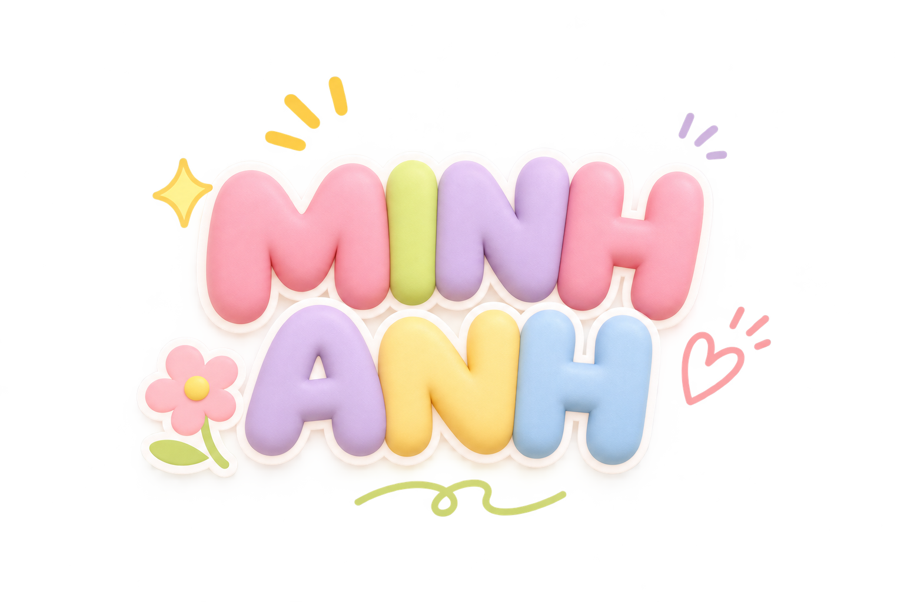

UX-design · Stockholm · Söker LIA
Hej! Jag heter Minh Anh och designar digitala upplevelser för alla.
Jag gillar att kombinera visuell design, användbarhet och teknik för att skapa digitala upplevelser som känns lika bra som de fungerar.

01 / Utvalda skolprojekt
Projekt jag har arbetat med.
Olika perspektiv.
Samma nyfikenhet.
✳ Välj ett projekt för att läsa mer
02 / Om mig
Nyfiken på människor. Intresserad av hur saker fungerar.
Hej, jag heter Minh Anh Nguyen.
Jag studerar UX-design på Nackademin i Stockholm och tycker om att kombinera kreativitet med användarcentrerat tänkande.
Jag gillar att utforska hur visuella lösningar, tydlig struktur och genomtänkta detaljer kan göra digitala tjänster enklare och mer tillgängliga för fler.
Kompetenser
Verktyg
Figma · FigJam · Miro · HTML & CSS · Photoshop · Maze
03 / CV
Ta en närmare titt.
Vill du veta mer om min bakgrund och erfarenhet? Ladda ner mitt CV på svenska eller engelska.
↘Lägg PDF-filerna i mappen assets med namnen cv-svenska.pdf och cv-english.pdf.
04 / Kontakt
Har du ett projekt i åtanke
eller söker du en LIA-student?
Jag vill gärna höra från dig.
ngocminhanh.se@gmail.com ↗